Сделайте нам в ЦМИК!
Кто такой этот ваш CMYK и почему в нём надо готовить макеты под печать, а в RGB не надо.

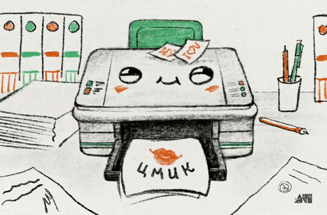
«Ваши макеты должны быть подготовлены в цветовой модели CMYK», «Переведите, пожалуйста, все цвета в CMYK!», «Да у вас же пол макета в RGB!». Возможно, вы уже сталкивались с подобным возмущением, а если нет, то в какую типографию не обратитесь — это будет главным требованием к цветам. Давайте разбираться, что такое ЦМИК и почему в этом ЦМИКе надо готовить макеты.
Матчасть
Начнём с матчасти. Всё, что мы делаем в мире диджитала на этих компутерах или мобилках: каждый клик, движение мышкой, иконка или файл, текст, песня или макет — это набор числовых значений, который с помощью понятных машине алгоритмов она визуализирует в понятные человеку картинки на экране. И цвет тут не исключение.
Цветовые модели
Все цвета, которые выводятся на экран или печатаются принтером — для машины тоже набор числовых значений. И чтобы описывать цвет одинаково понятно и для машины, и для человека придумали общие системы координат — цветовые модели.
Основных цветовых моделей несколько: RGB, CMYK, Lab, HSB. Каждая такая модель предназначена для определенных целей и представляет цвет немного по разному.
Например, в диджитал, когда используют графику «на экране», часто говорят про цветовую модель РГБ. А те, кто занимаются печатью, говорят про ЦМИК. Разберёмся, чем РГБ отличается от ЦМИК и как они устроены.
Цветовая модель RGB
Принцип работы экрана
Работа экрана похожа на работу гиганской трёхцветной гирланды на новогодней ёлке, в которой лампочки загораются в хаотичном порядке, раскрашивая её разными цветами.
Примерно так же и на экране. Изображение, которые вы видите получается из комбинаций свечения огромного количества микролампочек — пикселей.
Пиксели очень маленькие, поэтому человеческий глаз не замечает их по отдельности, а сразу воспринимает всё, как готовую картинку целиком.

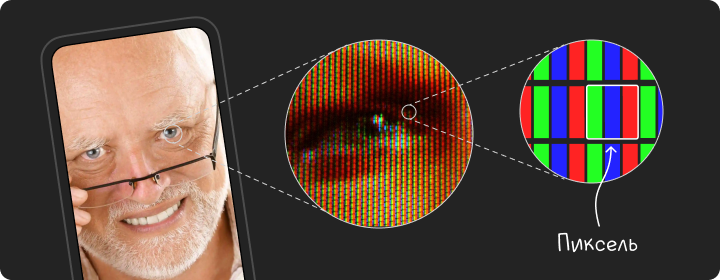
Каждый пиксель состоит из субпикселей трёх цветов: Красного (Red), зелёного (Green) и синего (Blue). Отсюда и название модели — RGB. Субпиксели могут светиться с разной яркостью в каждой точке экрана, создавая при совмещении разноцветное изображение.

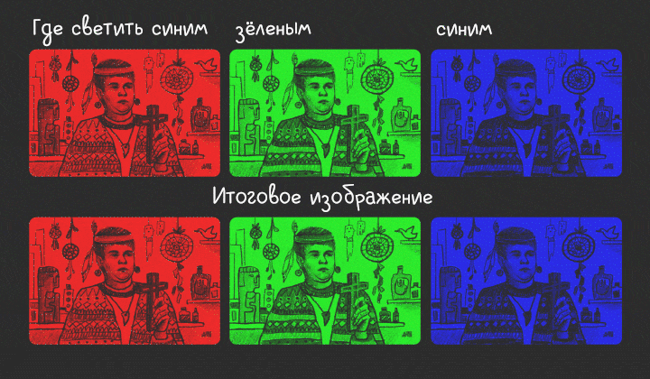
Получение цвета в RGB
Яркость свечения субпикселей контролируется каналами RGB. У каждого субпикселя: красного, зелёного и синего, есть свой отдельный канал в тиктоке.
Насколько субпиксели будут ярко светиться и какой цвет от этого в итоге приобретёт пиксель в целом, определяется значением каждого канала соответствующего цвета в диапазоне от 0 до 255.

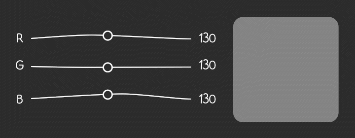
Например, чтобы получить чистые цвета R, G, B, выкручиваем один канал на 255, остальные два оставляем по нулям.

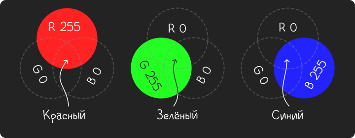
Чтобы получить, например, жёлтый, базовые цвета нужно смешать. Включаем на максимум — R и G каналы, для пурпурного — R и B, а голубой цвет получаем смешивая— G и B.

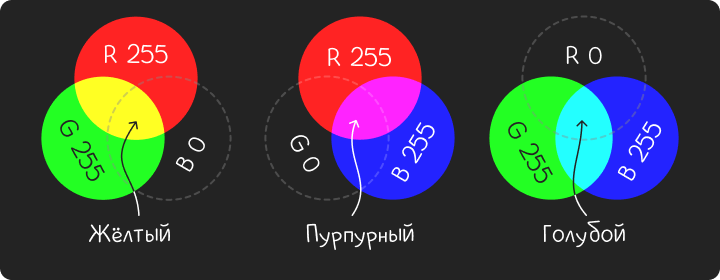
Если все три субпикселя будут светиться со стопроцентной яркостью, то мы увидим белый цвет. А если значения всех трёх каналов равны нулю — пиксель не светится вообще и на экране получается чёрный.

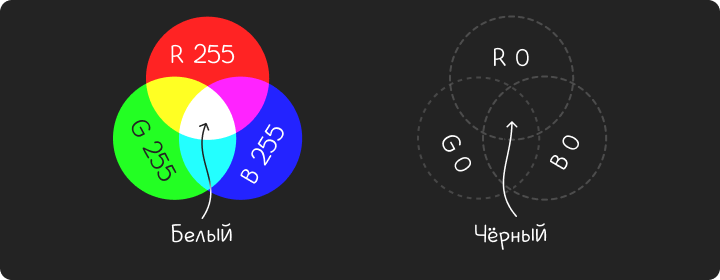
А если использовать три канала не на полную, а например, комбинировать их — можно получать самые разные цвета и оттенки.

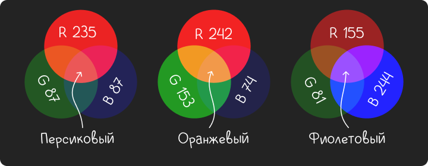
Всего же, с помощью таких манипуляций, RGB поддерживает 255³= 16 777 216 разных цветов, всевозможных оттенков, любой яркости и насыщенности, короче дофига. Такой диапазон возможен благодаря особенностям воспроизведения цвета на экране.
Особенности RGB
Первой особенностью модели РГБ является то, что экран сам излучает свет. Поэтому и цвета мы видим такими, какими их воспроизвёл экран, без искажений.

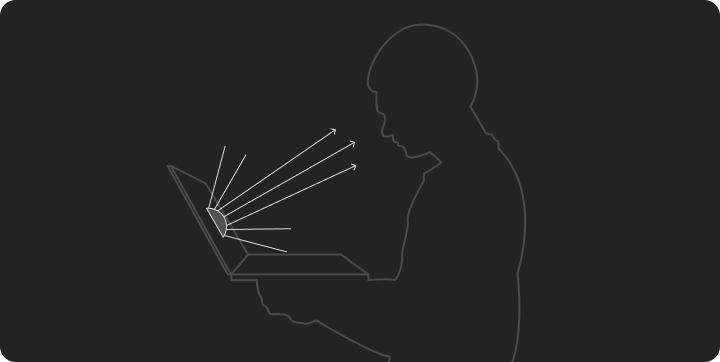
Вторая особенность в том, что цвет мы получаем, складывая каналы светящихся объектов — субпикселей.
То есть, когда мы смешиваем два цвета, новый получившийся становится ярче и светлее, чем два предыдущих. Такой способ получения цвета, по умному, называется аддитивным.

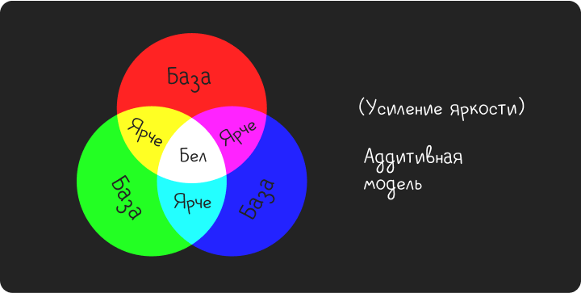
Из-за того, что экран сам способен воспроизводить свет и генерировать какие угодно цвета, они получаются сочные, яркие и очень насыщенные. И по сути, ограничены лишь цветовыми характеристиками монитора. Чем монитор лучше, тем вкуснее цвета.
Но, к сожалению, для печати всё работает несколько иначе.
Цветовая модель ЦМИК
Принцип работы принтера
Работа принтера похожа на то, как дети в школе смешивают цвета на уроках рисования. В палитре есть базовый набор красок, а чтобы получить другие надо смешать те, что есть. Если, например, смешать красный и жёлтый, получится оранжевый, а если голубой и зёленый — будет бирюзовый.
В CMYK таких базовых красок четыре: голубой (Cyan), пурпурный (Magenta), жёлтый (Yellow) и чёрный (KeyColor). Все остальные цвета получаются из них.
Только, на самом деле, в принтере краски не смешиваются, а ложатся на бумагу отдельными точками базовых цветов, одна рядом с другой или друг на друге. Такие точки называются — растром.
Растры, так же как пиксели, настолько маленькие что мы их не различаем, а видим уже складывающееся из них цветное изображение.

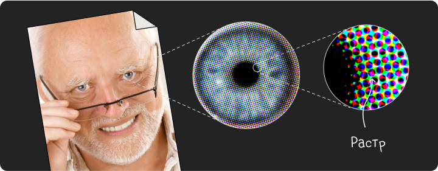
И если в РГБ для получения разных цветов и изображения, лампочки горят вместе, но с разной интесивностью, то в ЦМИК при печати, каждый цвет наносится по-очереди, в ту область макета, где он должен быть и смешаться с другими.

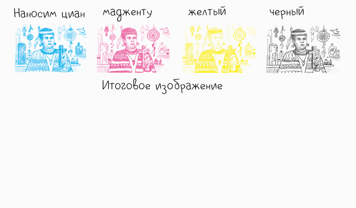
Получение цвета в CMYK
В отличии от РГБ, цветовая модель ЦМИК не содержит информации о цвете, а просто указывает принтеру, какое количество краски из базовой палитры нужно нанести на бумагу от 0 до 100.

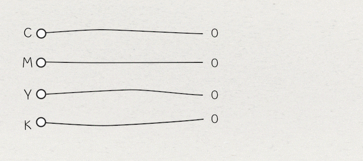
Например, чтобы получить чистые цвета С, M, Y, выкручиваем один канал на 100, остальные оставляем по нулям.

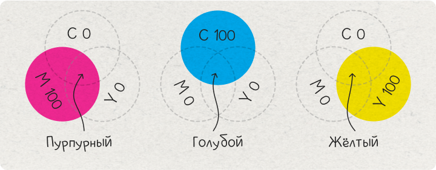
А если мы включим на максимум два канала, краски смешаются друг с другом и мы получим новые цвета: тёмно-синий, зёленый и красный.

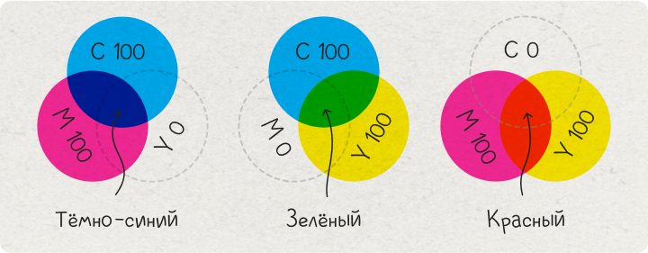
Для получения белого цвета мы просто не наносим краску на белый лист. А для чёрного используем чистый KeyColor 100.
Но чистый K 100 недостаточно насыщенный, а в некоторых случаях, бывает нужен чёрный, как ночь, тогда к KeyColor каналу можно дабавить немного других красок — С40 M20 Y20 K100.

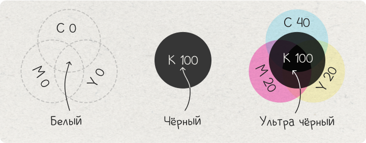
Некоторые цвета, как и в РГБ, можно набирать и в три канала. Но для ЦМИК это скорее исключение, чем правило, потому что увеличивается вероятность «перелива» — это когда капли краски уже не впитываются в бумагу, а расплываются и непредсказуемо смешиваются между собой.
Но в некоторых случаях, если не «перелить» — можно получить приятные оттенки.

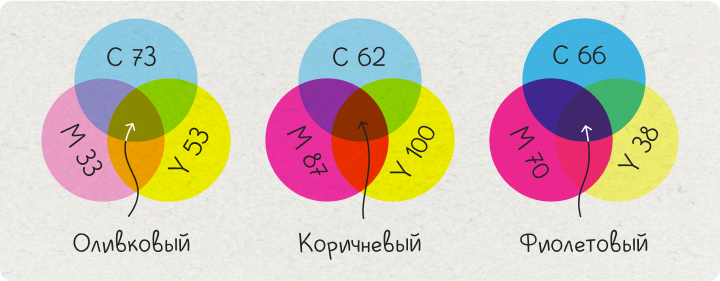
В целом, количество цветов которые можно отобразить с помощью ЦМИК сильно меньше, чем в РГБ. Во многом, это определяется особенностями восприятия цвета с печатных носителей.
Особенность CMYK
Первая особенность заключается в том, что бумага, картон или любой другой печатный носитель не светятся сами по себе напрямую, а способны лишь отражать свет от источников, неизбежно поглощая и преломляя какую-то его часть.
Из-за этого, происходит естественная потеря яркости и насыщенности. В итоге, мы видим, что цвета печатных носителей всегда тусклее и темнее, чем на экране.

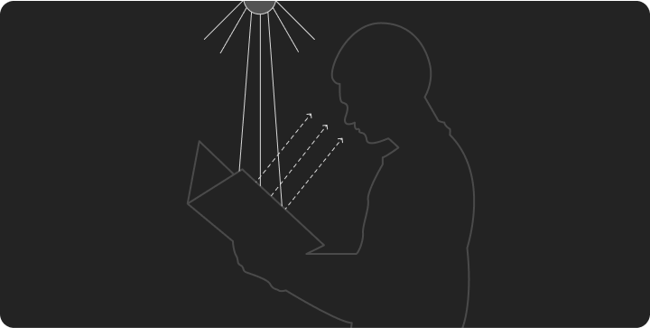
Во-вторых, не только сама бумага, но и краска поглащает свет. А при смешивании нескольких цветов для получения нового, смесь красок поглощает ещё больше света и новый цвет всегда неизбежно становится темнее предидущих.
Во-вторых, не только сама бумага, но и краска поглощает свет. А при смешивании нескольких цветов для получения нового, смесь красок поглощает ещё больше света и новый цвет всегда неизбежно становится темнее.
То есть образование нового цвета получается с вычитанием яркости предыдущих. Такой метод синтеза называется субстрактивным.

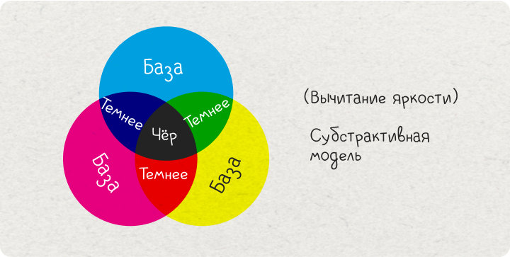
Окей, светит отражает, аддитивный метод, субстрактивный, пиксели и растры, в чём проблема то? Почему нельзя отравить макет просто в РГБ как есть?
Проблема автоперевода из РГБ в ЦМИК
Проблема в том, что даже если вы отправите макет для печати в РГБ, принтер всё равно автоматически переведёт все цвета в ЦМИК, потому что он не может видеть их по-другому.
А ещё машина не понимает как будут выглядеть цвета в реальном мире. Ей точно всё равно и на аддитивный метод, и на субстрактивный, и что там светится само, а что отражает.
Задача машины просто подобрать и перевести максимально похожие циферки из одной цветовой модели в другую, без учёта хотелок печатников, возможностей и ограничений цветовых моделей. Короче, если кратко — машине насрать.
Поэтому хотите вы этого или нет, но чтобы сделать крутой печатный макет с максимально яркими и насыщенными цветами перевод из РГБ в ЦМИК придётся брать в свои руки и настраивать цвета вручную.
Ручной перевод
Так что, зная особенности РГБ и ЦМИК, а так же, учитывая, наплевательское отношение машин к делам человеческим, бери цвет в свои руки:
- Выставляй цветовую модель CMYK. В InDesign она установлена по-умолчанию, в Photoshop, Illustrator и CorelDraw можно выбрать цветовую модель при создании документа.
- Задавай числовое значение цветов вручную. Набирая каждый цвет вручную, ты гарантируешь себе максимально предсказуемый результат на печати.
- Все картинки переводи в CMYK. Это можно сделать в Фотошопе — Изображение → Режим → CMYK.
- Используй не больше двух каналов. Так цвета будут максимально яркими и насыщенными.
- Ну ладно, иногда можно и три. Но не допускай «перелива», сумма всех каналов дожна быть не больше 240.
- Не стесняйся советоваться со специалистами. В большинстве типографий есть список цветов, которые они предсказуемо хорошо могут напечатать.
- Договорись о тестовой печати. Как бы хорошо не был настроен цвет в программе, на качество печати влияют и другие факторы — бумага, печатная машина и чернила. Это нельзя контролировать, но можно подстроиться. Так что, итоговые корректировки лучше делать после тестовой печати.
Давайте закрепим
- Принтер печатает и видит макет только в ЦМИК и даже если вы отправите на печать РГБ он всё равно переведёт цвета в ЦМИК, но плохо.
- Автоматически принтер всегда переводит цвета плохо, потому что машина просто перегоняет одни циферки в другие, не учитывая особенностей цветовых моделей.
- Главная особенность в том, что экран сам светит уже нужным нам цветом, а бумага может этим цветом только отсвечивать от внешних источников.
- Но даже тот свет, который попадает на бумагу теряет насыщенность, потому что краски его поглощают, и чем больше слоев и количества краски, тем темнее и невзрачнее результат.
- Поэтому самые яркие цвета в ЦМИК — это базовые цвета и цвета в два канала, что сильно ограничивает палитру в сравнении с РГБ.
- В итоге, чтобы получить предсказуемые и максимально вкусные цвета на печати надо забыть про РГБ и работать сразу с той палитрой, которая есть в ЦМИК.
- И не стоит расстраиваться, даже того, что есть хватит на кучу прекрасных макетов :)